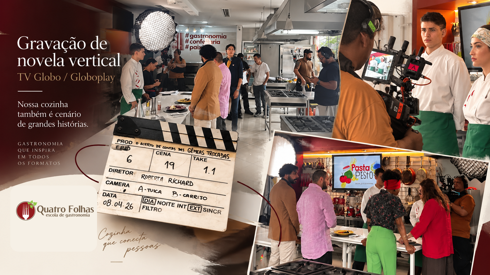
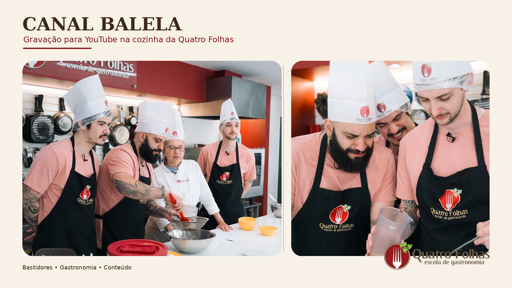
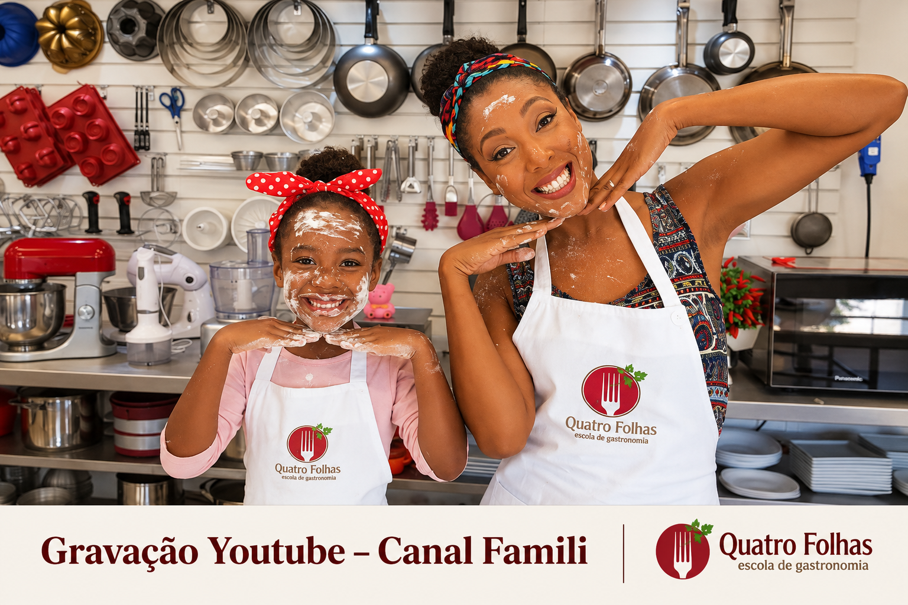
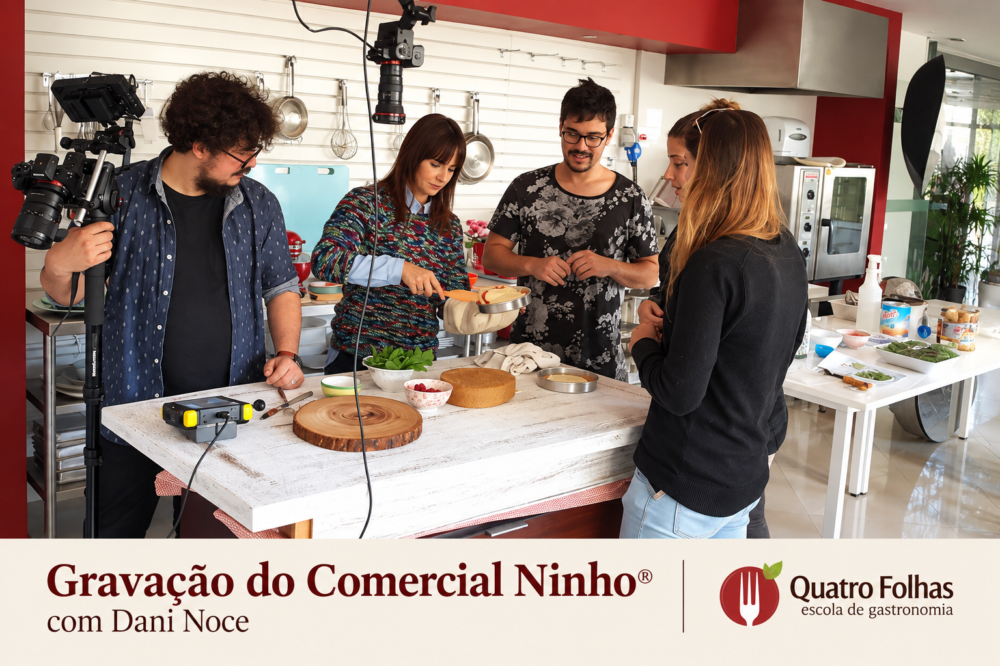
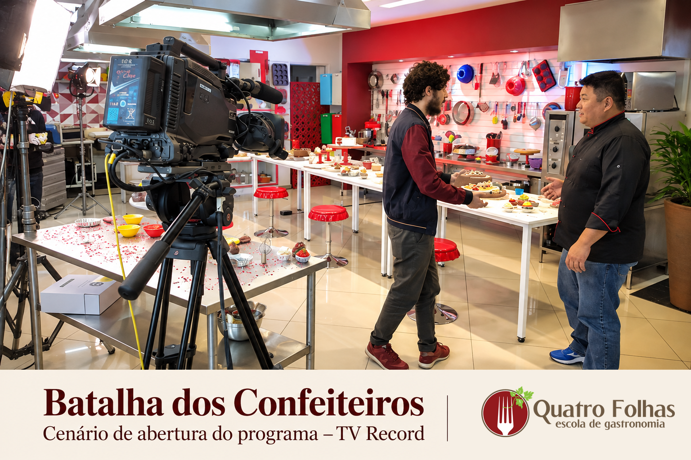
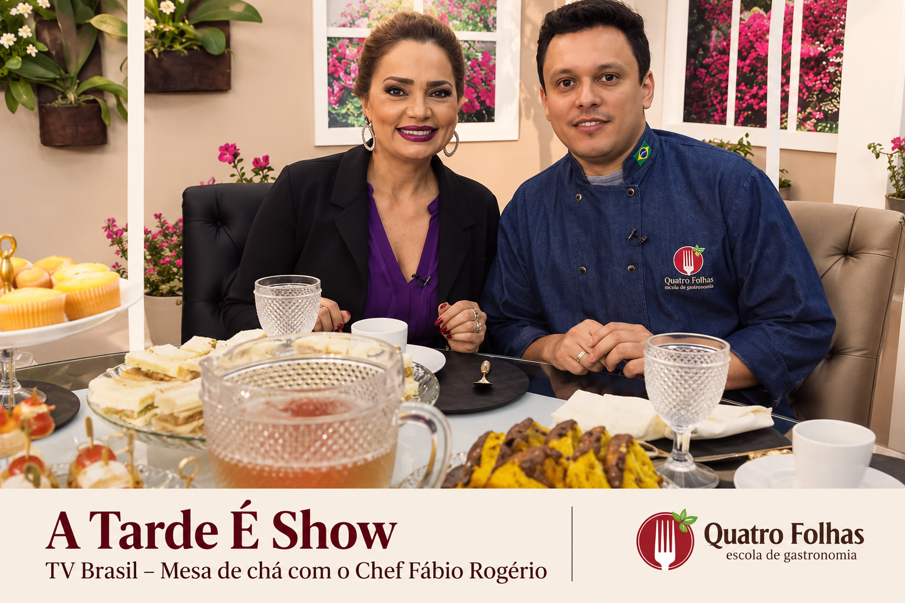
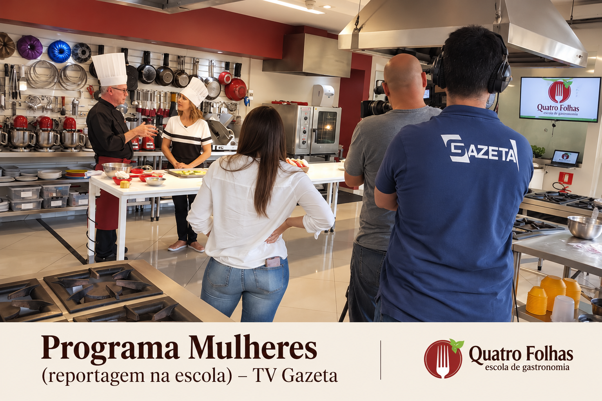
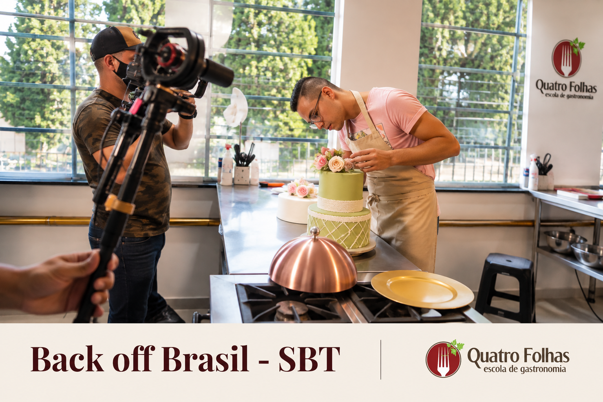

TV e streaming
Gravação de novela vertical para TV Globo e Globoplay.
Mídia e gravações
A estrutura da Quatro Folhas já recebeu programas de TV, realities, conteúdos digitais, produções para streaming e gravações de marcas. É uma cozinha real, equipada e pronta para gastronomia virar imagem.
Gravação de novela vertical para TV Globo e Globoplay.
Histórico com programas e conteúdos gastronômicos de grande alcance.
Ambiente profissional para filmar, fotografar, treinar e receber equipes.

Produções em destaque
Registros de gravações, comerciais, programas e conteúdos produzidos na estrutura da Quatro Folhas.







Globo, Globoplay, TV Record, TV Gazeta, TV Brasil e SBT já aparecem no histórico visual da escola.
Conteúdos para canais, creators e plataformas digitais com gastronomia em uso real.
Produtos e campanhas ganham contexto técnico, visual e gastronômico dentro da cozinha.
Ambiente profissional para filmar, fotografar, treinar equipes e receber produções.
Precisa de uma cozinha profissional para gravar, fotografar ou receber uma produção?
Falar com consultorPara alunos
Alunos se reconhecem em um espaço que já foi palco de programas, realities e gravações profissionais.
Quando uma produção escolhe a escola como cenário, isso reforça qualidade visual, organização e cozinha equipada.
O histórico com Batalha dos Confeiteiros conversa diretamente com quem busca confeitaria profissional, bolos e doces finos.
Produtoras e marcas
O mesmo histórico que encanta alunos também fortalece a proposta comercial para produtoras, agências e marcas que precisam de um ambiente gastronômico pronto para filmar, fotografar, treinar ou receber convidados.
Cozinha profissional com identidade visual, bancadas, equipamentos e ambiente real de aula.
Ver locaçãoProdutos aparecem em uso real, com contexto técnico, degustação e narrativa gastronômica.
Ver parceriasA equipe avalia objetivo, formato, data, equipe envolvida, apoio técnico e uso de imagem.
Solicitar proposta